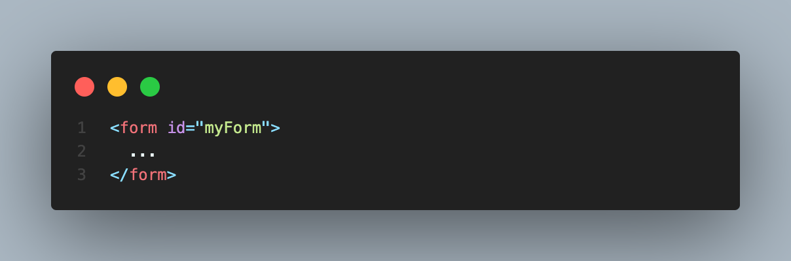
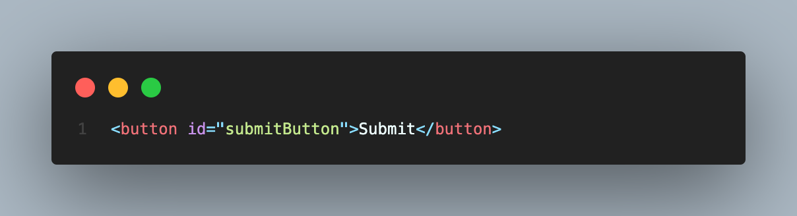
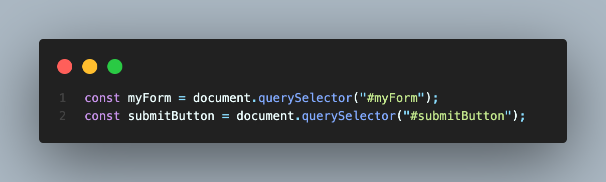

If you're building a website, you're likely to run into a situation where you want to place a submit button outside the form element. This can be tricky, as the button and form need to be connected so that clicking the button will trigger the form submission. In this blog post, we'll go over how to connect an HTML form element and a submit button when the submit button is located outside of the form element.
The first step is to give your form an ID. You can do this by adding the "id" attribute to your form element and giving it a unique name, like so:
Next, create your submit button. You can place it anywhere on your webpage, but make sure to give it an ID as well:
Now that you have your form and submit button set up, you'll need to add some JavaScript to connect them. Start by selecting your form and submit button using their respective IDs:
Once you have your form and submit button selected, you can add an event listener to the submit button that triggers the form submission:
This code listens for a click event on the submit button, and when triggered, it calls the submit() method on the form element, which will submit the form.
That's it! With these few lines of code, you can connect your HTML form element and submit button, even if the button is located outside of the form element. By following these steps, you can create a seamless user experience and ensure that your form is submitted correctly.